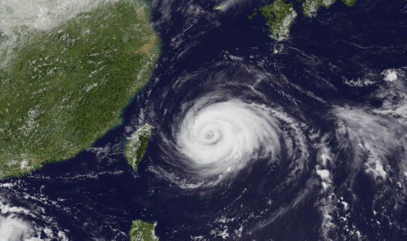

Climate difference
馬來西亞和台灣的緯度不同，地理位置以及條件都影響了天氣環境，究竟有什麼不同呢~一起來看看吧!
馬來西亞靠近赤道，所以一年四季都處在高溫之中，而台灣由於季風氣候，冬天會特別的寒冷，所以馬來西亞人一開始來台灣的時候很驚訝~天啊冬天需要穿外套!
「不早了太陽下山了。」通常，太陽會在6點左右下山吧?在馬來西亞可不是這樣，馬來西亞的太陽8、9點才會下山喔!
台灣處於環太平洋地震帶上，大大小小的地震從沒少過!馬來西亞幾乎沒有地震喔~所以下次地震時記得安撫大馬的朋友~
每當颱風季，台灣就會被大風大雨侵蝕，在馬來西亞沒有颱風這種東西，因為顆勢力太小了無法構成颱風的生成條件!
